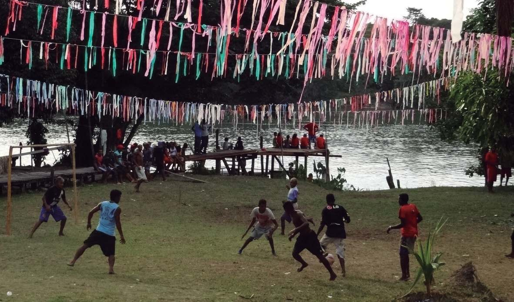

Conhecer a autonomia territorial e política dos Povos quilombolas do Rio Capim é possivel através da história de Canavial. Primeiro, é o nome original do povoado mais antigo que se formou a margem esquerda do rio Capim, na frente, mais um pouco acima do Casarão do Aproaga e o povoado mais próximo da vila de Santana situada à margem direita do rio. Segundo, com a formação deste núcleo por Gil Herculano dos Santos, filho de Arcolano Domingos dos Santos, as unidades domésticas que se formam adquirem autonomia territorial em relação aos domínios dos proprietários do engenho. Ali, abriram as primeiras roças, caçam, pescam e extraem os produtos necessários para fabricar casas, canoas e cestarias. Ao que parece, havia um canavial deste lado do rio e os antigos trabalhadores do engenho vieram se instalar, mesmo sabendo que a economia da cana e do engenho entrava em decadência, logo as terras foram liberadas. Alguns documentos conferem esta afirmação com as terras da Ponta ou Sauá-Mirim.
Vista do trapiche de Sauá-Mirim.
Vergino dos Santos, que até a sua morte com a idade de 97 anos, era conhecido por saber contar a história do Aproaga. Barbosa transcreve uma narrativa sobre a formação de Canavial:
Essa terra era conhecida como Canavial, lugar de “preto fujão”, na época da escravatura muitos (se refere aos escravos) se esconderam aqui. Chamavam a gente lá em Santana (ele se refere a Santana do Capim) de “os pretos do canavial”. Depois de meu avô que mudou o nome, passou a Ipixuna, agora dizem Nova Ipixuna, não sei por que“nova”, continua sendo a mesma (BARBOSA, 2008, p. 99).
Assim, na narrativa do senhor Vergino dos Santos, destaca-se uma estratégia de formação de povoados e, ainda, a produção de uma identidade ao nível micro, citando os “ipixunenses” (pertencentes a Nova-Ipixuna), o “pessoal da Mantegagem (pertencentes à Taperinha) e a “gente- da-ponta” ou “sauáenses” (pertencentes ao Sauá-Mirim) (BARBOSA, 2008, p. 107).
A neta de Gil Herculado dos Santos e Luiza Maria da Conceição dos Santos é a senhora Maria América dos Santos, que em fala pausada, complementa a descrição desse movimento da margem esquerda para a direita do rio Capim, quando em companhia dos pais Manoel Raimundo dos Santos e Adélia Maria da Conceição (filha do Gil) empreenderam a mudança da margem esquerda para a direita.
Mas depois a gente crescendo, meu pai virou, veio saindo, aí, nós atravessamos já para esse lado daí, da Santa Maria da Taperinha. Vendeiro pra outros, pra outros pessoal, né? Aí, meu pai atravessou já para esse lado, nós fiquemos pra aí... Nós não ganheimos nada de lá, só mesmo era de ser escravo, eles e nós todos, só de ser escravo, aí, o que ele ainda puderam dá pra ele, foi esse terreno, que ainda passaram hoje pra aí, mas ainda deram o terreno, né? Disse:‘Esse terreno é pra vocês trabalharem’, aí, foi que nós fiquemos nesse terreno que nós estamos até hoje. E isso que é. Sempre quando pessoal vai lá pergunta, eu digo não, o caso era isso, meu pai contava, eu ainda me lembro do doutor Pinheiro, da dona Lala, que era mulher dele tudo; só não me lembro bem do doutor Pedro Miranda e a mulher dele, por que nesse tempo, eu tava mais pra criança. Mas a minha mãe mesmo contava que eles era trabalhador deles, eles só davam coisas pra eles, roupa pro meu pai, minha mãe cortava cana, junta cana pra moerem, moerem no engenho, no engenho bonito lá de moer cana ... Bandalhou tudo, né?
Na documentação cartorial levantado em São Miguel do Guamá, foi localizado uma informação sobre o imóvel “Sauá”, objeto de uma transação no dia 15 de março de 1945. A senhora Maria Joana de Oliveira, domiciliada em São Domingos do Capim, adquiriu o imóvel descrito nos termos abaixo:
Metade da Casa do Sítio Sauá, situada a margem esquerda do rio Capim, distrito de Santana, município de São Domingos do Capim e mais quatrocentas braças de terras de frente com uma légua de fundos, sendo só terra firme, começando da casa para baixo, até onde completar, limitando aí e pela frente com as terras pertencentes ao Doutor Pedro Chermont de Miranda, casas e bem feitorias. (Registro 965. Cartório de Licínio Gomes Oliveira. Cidade de São Miguel do Guamá).
Explica-se no documento que se tratava de um “Título de posse, expedido pelo Intendente que foi em São Domingos do Capim, na forma do art. 126 do Regulamento de 28 de Outubro de 1891”.
Sauá-Mirim possui parte das instituições e prédios deste segmento do rio Capim (escola, igreja, sede da AQURC). A procissão da Virgem de Nossa Senhora de Nazaré estreita os vínculos com Nova Ipixuna e é venerada na igreja do povoado. No barracão, realizam-se as reuniões da Associação de Remanescentes de Quilombo (AQURC) e outros eventos de interesse dos quilombolas. No segundo semestre de 2013, foi inalgurado, graças às contribuições das famílias, um prédio de alvenaria da AQURC.
No Vale, distinguem-se hoje, não menos de 67 povoados, mas vários sítios diferenciados pelos seus proprietários e os conhecedores do rio.
Desenhos do território dos Povos do Aproaga elaborado pelos moradores.
Todos os direitos reservados ao site Bianca Gama 2019